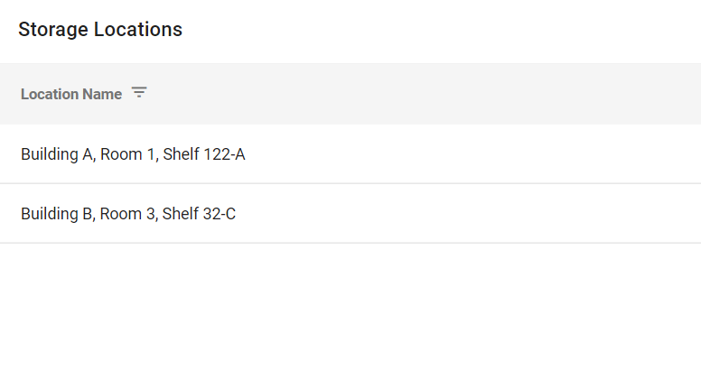

Storage locations are the physical locations
(for example in an evidence room) where you store incoming media. The following figure
shows the Storage Location summary page in

Use the following procedures to configure storage locations: